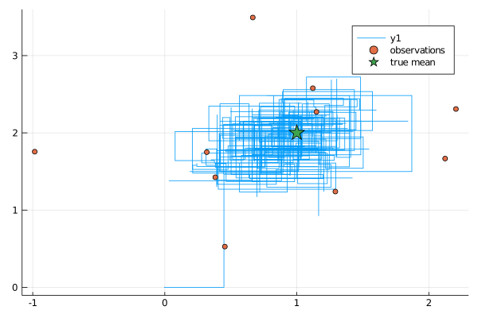

Get started
Installation
The package is not registered yet. To install it write:
] add https://github.com/JuliaDiffusionBayes/ExtensibleMCMC.jlOverview
For the simplest problems
The underlying idea is to let the user specify the main component that define the MCMC algorithm:
- the
target lawtogether with- a function that sets the parameters of the
target lawand - a function that evaluates the log-likelihood at the observations
- a function that sets the parameters of the
and then let the user choose from a wide range of update functions a set of updates that are supposed to be performed at each iteration of the MCMC algorithm.
For more advanced problems
When the log-likelihood of the target law cannot be written down explicitly or you need to perform some specialized steps then the MCMC algorithm admits various extensions. See the developer documentation for more information.
Workflow for simple problems
Defining the target law
Start from defining the target law. This is usually a struct.
using Distributions
using ExtensibleMCMC
const eMCMC = ExtensibleMCMC
mutable struct BivariateGaussian{T}
P::T
function BivariateGaussian(μ, Σ)
@assert length(μ) == 2 && size(Σ) == (2,2)
P = MvNormal(μ, Σ)
new{typeof(P)}(P)
end
endAfter that, provide two functions for it. The first one is a setter of new parameters
function eMCMC.set_parameters!(gsn::BivariateGaussian, loc2glob_idx, θ)
μ, Σ = params(gsn.P)
μ[loc2glob_idx] .= θ
gsn.P = MvNormal(μ, Σ)
endwhere loc2glob_idx is a vector of indices pointing to parameters that are to be updated.
The second one evaluates the log-likelihood.
function Distributions.loglikelihood(gsn::BivariateGaussian, observs)
ll = 0.0
for obs in observs
ll += logpdf(gsn.P, obs)
end
ll
endGenerating or loading in the data
This step is independent of the package ExtensibleMCMC.jl.
The important point is that unless you overload the update functions yourself, the data should be stored in the format of a NamedTuple with fields P containing the target law and obs containing a vector of observations.
We may simulate some test data.
using Random
Random.seed!(10)
μ, Σ = [1.0, 2.0], [1.0 0.5; 0.5 1.0]
trgt = MvNormal(μ, Σ)
num_obs = 10
data = (
P = BivariateGaussian(rand(2), Σ),
obs = [rand(trgt) for _ in 1:num_obs],
)Parametrizing the MCMC sampler
Parametrizing the Monte Carlo sampler boils down to specifying a list of updates (out of a list provided in this package plus additional updates defined by you) passed as a vector to an MCMC struct. Each update usually contains
- specification of a
transition kernel - an index or indices of a parameter vector that is/are being updated
- a corresponding prior on the parameters
- additional information about adaptation scheme
Additionally, we may pass a backend to MCMC to specify what type of Workspaces need to be initialized. This last option is used only if you write your own modifications to the algorithm that need to use their own workspaces.
Apart from MCMC struct we need to pass the number of mcmc steps, the data and an initial guess for an unknown parameter vector.
Finally, we have an option to pass Callbacks.
mcmc_params = (
mcmc = MCMC(
[
RandomWalkUpdate(UniformRandomWalk([1.0]), [1]; prior=ImproperPrior()),
RandomWalkUpdate(UniformRandomWalk([1.0]), [2]; prior=ImproperPrior()),
]
),
num_mcmc_steps = Integer(1e3),
data = data,
θinit = [0.0, 0.0],
)Running the sampler
With parameterization of the sampler in place, running it is a one-liner
global_workspace, local_workspaces = run!(mcmc_params...)The output of the call is a tuple with a global workspace (that contains information about the paramater chain) and local workspaces (that contain information about log-likelihoods and acceptance rates).
Examining the results
The process of examining the results is left to the user; however, we plan to have some convenience plotting functions being implemented in ExtensibleMCMCPlots.jl.
using Plots
function plot_results(ws)
θhist = collect(Iterators.flatten(ws.sub_ws.state_history))
p = plot(map(x->x[1], θhist), map(x->x[2], θhist))
scatter!(map(x->x[1], data.obs), map(x->x[2], data.obs), label="observations")
scatter!(map(x->[x], μ)..., label="true mean", marker=:star, ms=10)
display(p)
end
plot_results(global_workspace)
Updates
To modify the MCMC algorithm pass a different list of updates.
- For a uniform random walk pass
RandomWalkUpdate(
UniformRandomWalk([ϵs]), [coord_indices];
prior=ImproperPrior(),
)- For a uniform random walk with adaptiation of steps pass
RandomWalkUpdate(
UniformRandomWalk([ϵs]), [coord_indices];
prior=ImproperPrior(),
adpt=AdaptationUnifRW(
dummy_parameter_to_infer_data_and_dimension;
adapt_every_k_steps=50,
scale=0.1,
),
),- For a Gaussian random walk pass
RandomWalkUpdate(
GaussianRandomWalk(Σ, [coord_indices];
prior=ImproperPrior(),
)- For a Gaussian random walk proposals with the Haario-type adaptive scheme pass
RandomWalkUpdate(
GaussianRandomWalkMix(Σ_const, Σ_adapt),
[coord_indices];
prior=ImproperPrior(),
adpt=HaarioTypeAdaptation(
dummy_parameter_to_infer_data_and_dimension;
adapt_every_k_steps=50,
f=((x,y,z)->(0.01+1/y^(1/3))), # at what pace to change reliance on adaptive Σ_adapt
),
),Priors
Simply pass a prior for the relevant subset of parameters to each update function (in place of ImproperPrior() above).